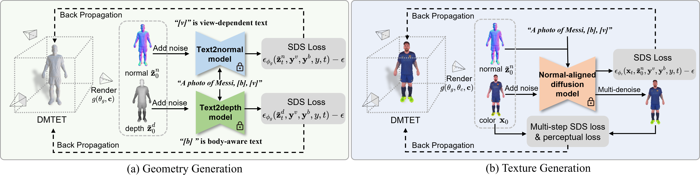

Abstract
Recent text-to-3D methods employing diffusion models have made significant advancements in 3D human generation. However, these approaches face challenges due to the limitations of the text-to-image diffusion model, which lacks an understanding of 3D structures. Consequently, these methods struggle to achieve high-quality human generation, resulting in smooth geometry and cartoon-like appearances. In this paper, we observed that fine-tuning text-to-image diffusion models with normal maps enables their adaptation into text-to-normal diffusion models, which enhances the 2D perception of 3D geometry while preserving the priors learned from large-scale datasets. Therefore, we propose HumanNorm, a novel approach for high-quality and realistic 3D human generation by learning the normal diffusion model including a normal-adapted diffusion model and a normal-aligned diffusion model. The normal-adapted diffusion model can generate high-fidelity normal maps corresponding to prompts with view-dependent text. The normal-aligned diffusion model learns to generate color images aligned with the normal maps, thereby transforming physical geometry details into realistic appearance. Leveraging the proposed normal diffusion model, we devise a progressive geometry generation strategy and coarse-to-fine texture generation strategy to enhance the efficiency and robustness of 3D human generation. Comprehensive experiments substantiate our method's ability to generate 3D humans with intricate geometry and realistic appearances, significantly outperforming existing text-to-3D methods in both geometry and texture quality.
Methodology
Our method is designed for high-quality and realistic 3D human generation from given prompts. The whole framework consists of geometry and texture generation. We first propose the normal-adapted and depth-adapted diffusion model for the geometry generation. These two models can guide the rendered normal and depth maps to approach the learned distribution of high-fidelity normal and depth maps through the SDS loss, thereby achieving high-quality geometry generation. In terms of texture generation, we introduce the normal-aligned diffusion model and employ a coarse-to-fine strategy. The normal-aligned diffusion model leverages normal maps as guiding cues to ensure the alignment of the generated texture with geometry. At the coarse level, we exclusively employ the SDS loss, while at the fine level we incorporate the multi-step SDS and perceptual loss to achieve realistic texture generation.
Gallery
Our approach enables the creation of lifelike human models featuring 200k-400k distinct faces and intricate 2K texture map. Explore our gallery for more generated models.
View human model in MeshLab
2K texture map
Results--Full-body
We showcase 3D humans generated by our method, which include full-body, upper-body, and head-only models. Additionally, we offer text-based editing capabilities for these 3D humans.
an American football player
a DSLR photo of Joe Biden
a Medieval European King
a man wearing a striped shirt and grey linen pants
a man wearing a blue jean jacket and jean trousers
a professional boxer
a woman wearing a short jean skirt and a cropped top
an elderly woman in a cardigan and skirt
a man wearing a white tanktop and shorts
a Roman soldier wearing a silver armor
a DSLR photo of Mark Zuckerberg in blue jeans
a DSLR photo of Tim Cook
a DSLR photo of Stephen Curry
a DSLR photo of LeBron James
a karate master wearing a belt
a DSLR photo of Leonardo DiCaprio in a maroon long sleeve top
a DSLR photo of Messi
a DSLR photo of Marilyn Monroe
a DSLR photo of Elon Musk in gray long sleeve top
a DSLR photo of Barack Obama in a suit
a DSLR photo of Jason Statham in brown long sleeve top
a DSLR photo of Donald Trump
Results--Upper-body
a woman in a sari
a woman in a business suit
a man in a tuxedo, with a crisp white shirt and bow tie
a woman in an evening gown, with sparkling diamond earrings
an elderly man in a fishing vest
a photo of Morgan Freeman in a deep blue shirt
a woman in a red dress, with a delicate gold necklace around her neck
a teenager in a leather jacket
an elderly man in a cardigan sweater
a child in a superhero costume, with a cape flowing behind them
a woman in a chef's coat
a girl in a ballet leotard
a man in workout gear
a DSLR photo of Joe Biden
an asian woman in bikini
a DSLR photo of Stephen Curry
a DSLR photo of Barack Obama
a photo of Mark Zuckerberg in a wine red shirt
Results--Head-only
a young man with a muscular jawline, stubble beard, and wearing a baseball cap
a DSLR photo of Leonardo DiCaprio
a photo of Scarlett Johansson
Rick Grimes in The Walking Dead
Daryl Dixon in The Walking Dead
a DSLR photo of Morgan Freeman
a man with dreadlocks
a man with a pompadour hairstyle, his hair slicked back stylishly
a man in his fifties with salt-and-pepper hair styled in a quiff
an elderly woman with deep wrinkles, sparkling eyes, and white hair tied in a bun
a DSLR photo of Joe Biden
a DSLR photo of Cristiano Ronaldo
a DSLR photo of Stephen Curry
a DSLR photo of Bill Gates
a DSLR photo of Jason Statham
a DSLR photo of Daenerys Targaryen
Text-based Editing
Our method offers the capability to edit both the texture and geometry of the generated 3D humans by adjusting the input prompt.
a photo of Messi in a purple shirt with afro hair
a photo of Messi in a brown shirt with cornrows hair
a photo of Messi in a pink shirt with mohawk hair
a photo of Messi in a baseball hat
a photo of Messi in a blue tank top
a photo of Messi in a gray jacket
a photo of Messi in a yellow sweater
a photo of Messi in a suit
Pose Editing
Our method also provides the ability to editing the pose of the generated avatars by adjusting the pose of the initialization mesh and modifying the prompts.
a photo of Elon Musk with his hands on his hips
a photo of Elon Musk raising a hand
Ethics Statement
The objective of HumanNorm is to equip users with a powerful tool for creating realistic 3D Human models. Our method allows users to generate 3D Humans based on their specific prompts. However, there is a potential risk that these generated models could be misused to deceive viewers. This problem is not unique to our approach but is prevalent in other generative model methodologies. Moreover, it is of paramount importance to give precedence to diversity in terms of gender, race, and culture. As such, it is absolutely essential for current and future research in the field of generative modeling to consistently address and reassess these considerations.